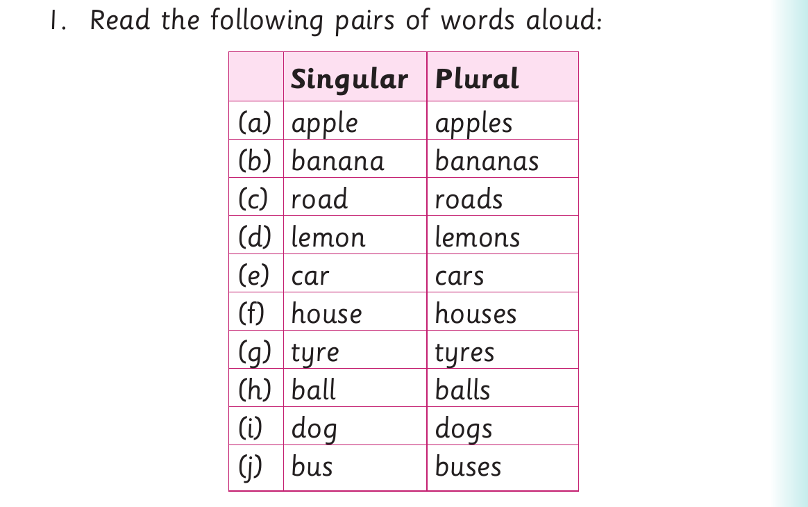

Objects and things found in other environments
Objects and things found in other environments
Activity 1

1. Read the following pairs of words aloud: Singular Plural (a) apple apples (b) banana bananas (c) road roads (d) lemon lemons (e) car cars (f) house houses (g) tyre tyres (h) ball balls (i) dog dogs (j) bus buses

2. Look at the pictures in the table. Then, make one sentence for each. Singular Plural (a) (b)